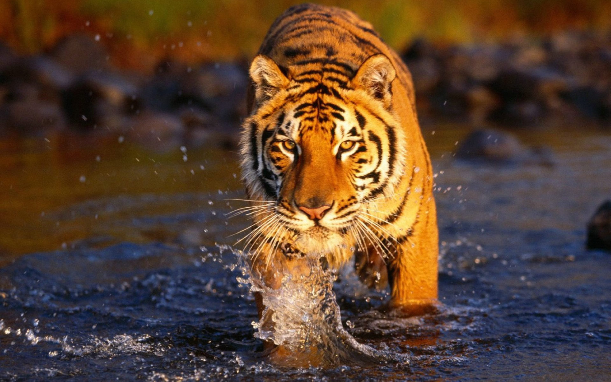
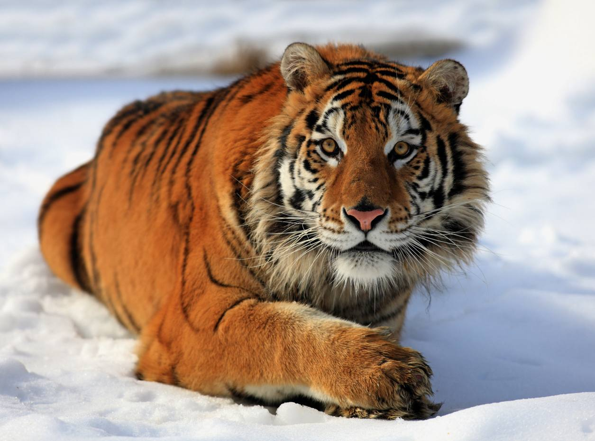

Bengal Tigers

| Scientific Name |
Panthera tigris tigris |
| Current Population |
2,500+ |
| Life Expectancy in the Wild |
8 - 10 years |
| Life Expectancy in Captivity |
18 - 20 years (25 is rare) |
Habitat and Diet
Bengal tigers can be found in India and are commonly known as Indian tigers. Like all other tiger subspecies, bengal tigers and strictly carnivores. They are considered to be a crucial part of Indian culture. These large animals are known to prey on chital, wild pig, hog deer and the occasional livestock to name a few.
Causes of Endangerment
- Habitat Loss
- Poaching for bones and skins
Bengal Tigers

| Scientific Name |
Panthera tigris altaica |
| Current Population |
Around 540 |
| Life Expectancy in the Wild |
16 - 18 years |
| Life Expectancy in Captivity |
25 years |
Habitat and Diet
Siberian, or commonly known as Amur, tigers primarily reside in Russia, but can also be seen throughout China and North Korea. Their residence in Russia's harsh birch forests is expansive, as Amur tigers are known to have the largest territory of any of the subspecies. These fierce predators feast on red deer, manchurian elk and red deer, to name a few.
Causes of Endangerment
- Poaching for skins and bones
- Body parts used in traditional Chinese medicine
Malayan Tigers

| Scientific Name |
Panthera tigris jacksoni |
| Current Population |
Around 340 |
| Life Expectancy in the Wild |
15 - 20 years |
| Life Expectancy in Captivity |
Unknown |
Habitat and Diet
Malayan tigers have a limited range, only being found on the Malay Peninsula and the southern end of Thailand. They are known to prey on wild boar, sambar and barking deer, and serow to name of few.
Causes of Endangerment
- Habitat Loss
- Excessive poaching for skins and bones